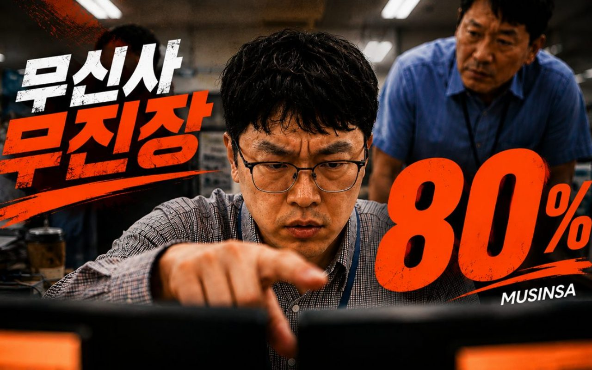
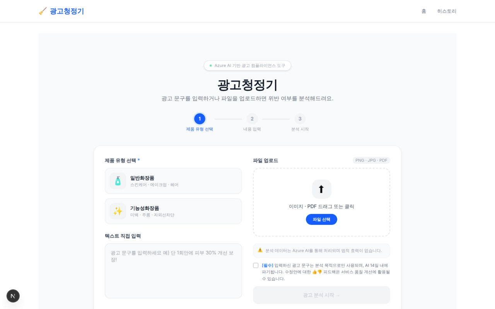
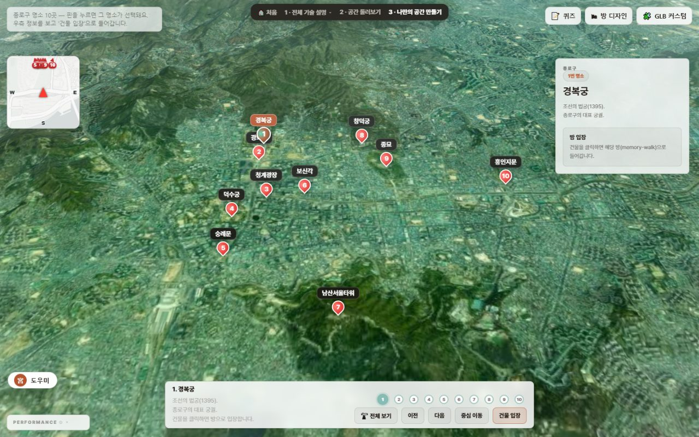
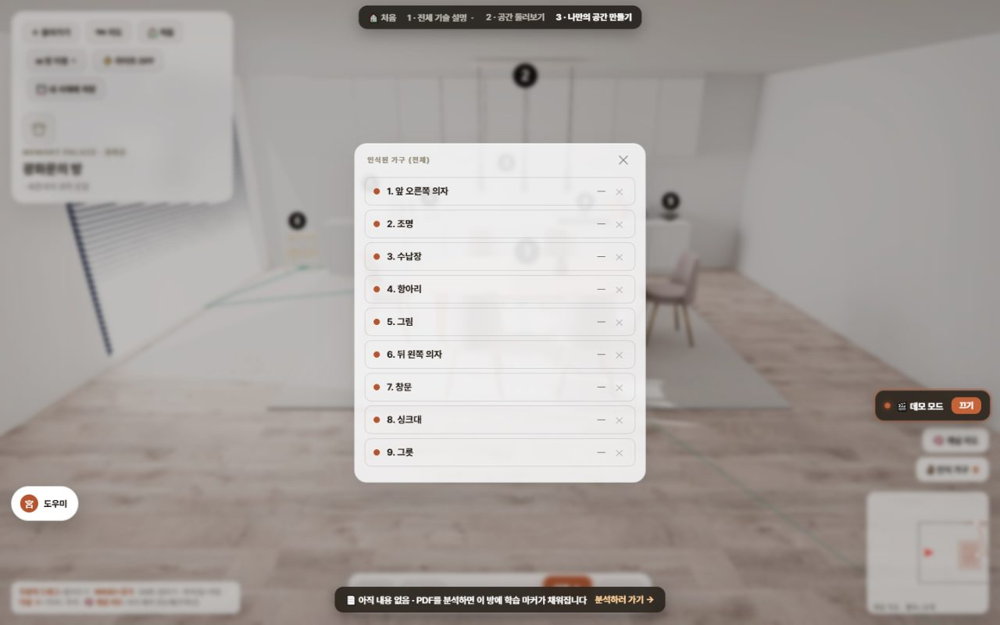
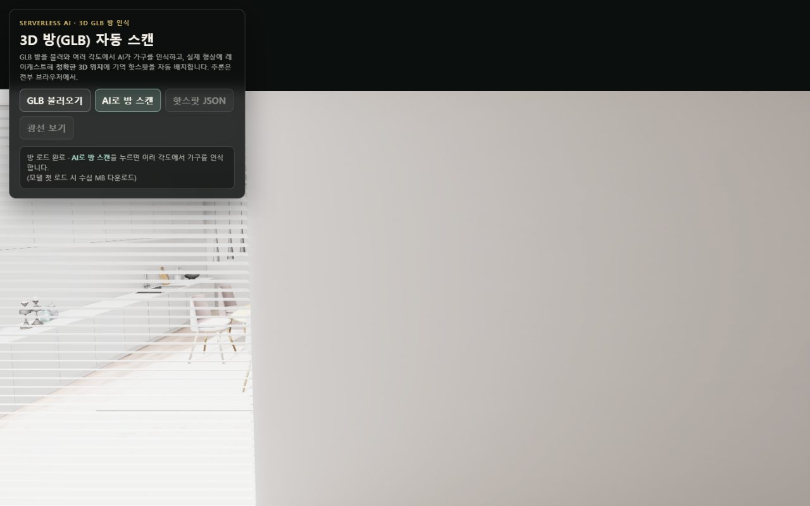
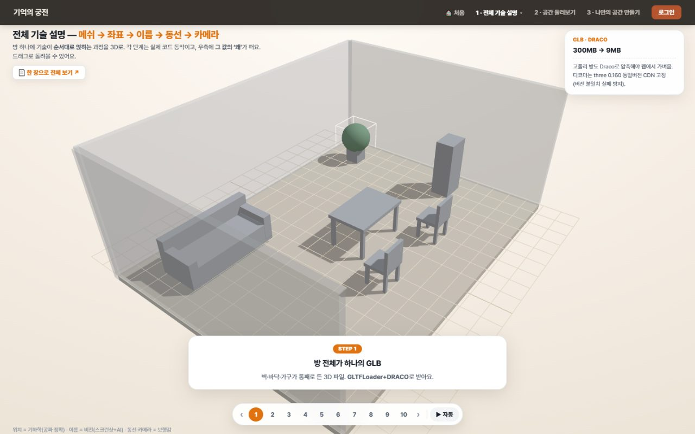

멘티
유학생을 심층 인터뷰하며 알았다. 질문을 안 하는 게 아니라, 물어볼 자리가 설계돼 있지 않은 것이었다.
사용자 리서치모든 서비스에는 사람이 멈추는 지점이 있다.
멘티가 질문을 삼키는 순간, 마케터가 다음 문장을 못 쓰는 순간,
시청자가 스크롤을 넘기는 순간. 나는 그 지점을 찾아 실제로 작동하는 제품과 콘텐츠로 바꾼다.
유학생을 심층 인터뷰하며 알았다. 질문을 안 하는 게 아니라, 물어볼 자리가 설계돼 있지 않은 것이었다.
사용자 리서치AdGuard·회랑에서 확인했다. '위험합니다'에서 끝나면 사람은 여전히 막혀 있다. 다음 행동까지 줘야 도구다.
AI 서비스 설계영상은 이탈 지점의 학문이다. 어디서 넘기는지를 역설계해 컷과 카피를 배치하면 사람이 끝까지 본다.
연출 · 메시지내 약점은 아이디어 과확장이었다. 그래서 neural-flow는 기능을 늘리는 대신 '오늘의 단 하나'만 남긴다.
제품 · 자기설계보기 좋은 것보다 실제로 작동하는 것을 만든다.
— 회랑 판단 ②. 화질을 낮추고 좌표 정확도에 자원을 몰았던 선택의 기준.
 Capture — PhrenO0/my-curator · neural-flow/build_static.py
Capture — PhrenO0/my-curator · neural-flow/build_static.py
아이디어가 늘어날수록 실행이 무너지는 내 문제를 직접 AI 제품으로 풀었다. Notion이 무엇을·왜를 쌓고, 캘린더가 언제를 실행하고, 파이썬 에이전트가 둘을 잇는다. 에이전트는 SENSE → THINK → ACT → REMEMBER 루프로 돌고, 경험 DB를 RAG로 검색해 자소서 초안을 만드는 멀티에이전트 엔진까지 붙였다. 최종 판단은 언제나 사람이 한다.
 Capture — PhrenO0/MS_AI_2nd_Adguard · frontend 로컬 실행
Capture — PhrenO0/MS_AI_2nd_Adguard · frontend 로컬 실행
마케터는 "이 문구는 위험합니다"에서 일을 끝낼 수 없다. 바로 쓸 다음 문장이 필요하다. 그래서 탐지에서 멈추지 않고 탐지 → 근거검색 → 판정 → 대안생성 → 재검증까지 5단계 Cascade로 설계했다. 법령을 기계적으로 자르면 조항의 의미 경계가 끊어졌기 때문에, 청크를 의미 단위로 다시 정리하는 데 시간을 썼다.
 Capture — PhrenO0/Mindpalace_Microsoft9ai_Thirdprj- · docs/ui
Capture — PhrenO0/Mindpalace_Microsoft9ai_Thirdprj- · docs/ui
팀이 자료에서 개념의 의미 구조를 뽑으면, 나는 그것을 걸어 다닐 수 있는 공간으로 옮겼다. 가구 인식 정확도를 며칠 파고든 끝에 알았다. 쓰는 사람에게 필요한 건 예쁜 렌더가 아니라 '가구가 실제로 어디 있는가'였다. 그래서 화질을 일부러 낮추고 좌표 정확도에 자원을 몰았다.

무신사 「26 여름 무진장 AI 광고제」 출품작 · 20초 숏폼전문 프로덕션과 렌더 퀄리티로 정면승부하면 학생팀은 진다. 그래서 싸우는 축을 바꿨다. 상사의 "더 줄여"가 디자인 수정 · 가격 할인 · 화면 비율 세 층위에서 동시에 작동하도록 설계하고, 기획 하네스와 셀렉 자동화 툴을 직접 만들어 적은 인원으로 완주했다.
악성 댓글의 흔한 해법인 '차단'은 사용자를 떠나게 할 뿐 행동을 바꾸지 못한다. 판정이 아니라 게시 직전 한 번 멈칫하는 순간을 설계했다. AI는 위험 신호를 감지하고, 최종 선택은 사용자에게 남긴다.
'나는솔로' 포맷을 빌린 22씬 2부작 수련회 홍보 콘텐츠. 스토리보드·일일촬영계획표·콜타임 역산까지 전 과정을 끌고 갔고, 어디서 사람이 넘기는지를 역설계해 컷과 카피를 배치했다. 채널 운영과 AI 영상(매치컷·가로 2분할, 브랜드 커머셜)도 함께 이어오고 있다.
MEDIA · AI · SPACE — RAG · 멀티에이전트 · 프롬프트 설계 · HITL · 3D·공간 UX · 행동설계 · 영상 연출 · 숏폼 · 사용자 리서치 · 시장·입지 분석 · PROPTECH · 자동화 툴 · PM·팀 리딩 · 데이터 전처리 · 책임있는 AI
Premiere Pro (주력) · CapCut · ReMotion 플러그인
Veo 3 · Grok (image-to-video) · GPT image · Midjourney · Suno · Claude
LLM API 직결 · 멀티에이전트 · 프롬프트 엔지니어링 · Python · React Native·Expo · Electron · OAuth(Google·Notion) · Azure AI (Search·Vision)
Figma · Notion · blog.naver.com/mindpd0219 · youtube.com/@별이바람에스치듯
개인 기획·제작 '구리 청년의 내일' · 구리시 공고 제2025-1480호 (2025.9)
E-Nudge — 공감형 넛지 설계
'Every Masterpiece Needs Wings' · 제2025-22호 · ㈜이너스커뮤니티 (2025.11.07)
제68기 수료 · ㈜금융사관학교 (2025.3)
멘티로 약 8개월(2025.4–11) 참여 후 수료
Microsoft · 2026.05.18 발급

수치와 성과는 내부 테스트 결과인지 외부 평가인지를 구분해 적었다. 무신사 광고제는 출품·공개 게시까지이며 수상 이력이 아니다. 회랑의 검출 정확도(의자 84% · 식탁 73%)는 기준 GLB 모델에서 Azure AI Vision이 낸 값이지 시스템 전체 정확도가 아니며, GraphRAG·검색은 팀 동료의 몫이다. 부풀리지 않는 것이 이 포트폴리오의 기준이다.
◆ 06 / 다음 작업을 위한 지속
나는 아이디어가 늘어날수록 실행이 무너지는 사람이다. 거창한 골격만 세우다 완성이 안 되는 일이 반복됐다. 취업 준비와 자기관리를 생각만으로 굴리려니 매번 흐트러졌다.
왜 계획은 늘 있는데 실행이 없을까? 도구가 없어서가 아니었다. 노션에도 캘린더에도 할 일은 충분히 쌓여 있었다. 문제는 지금 무엇 하나를 끝내야 하는지가 안 보인다는 것이었다.
시스템이 사용자의 의지력에 기대면 무너진다. 기능을 늘리는 대신 선택지를 강제로 줄이면 실행이 살아난다. 그리고 그 판단의 재료(비전·활동·마감)는 이미 내 노션과 캘린더에 있으니, 필요한 건 새 앱이 아니라 둘을 잇는 에이전트다.
9개 삶의 영역을 운영하는 에이전트, 경험 DB RAG 자소서 엔진, 공개 대시보드를 혼자 설계·구현·배포했다. 아이디어 과확장이라는 내 약점이 시스템 설계의 제약 조건으로 바뀌었다.
이 프로젝트에서 가장 크게 남은 건 코드가 아니라 "에이전트는 기억 → 추론 → 행동 → 다시 기억, 네 부품의 반복"이라는 감각이다. 새 에이전트를 만들 때마다 매번 이 네 개를 고르면 된다는 걸 알게 되자, AI 기능을 서비스 흐름 안에 배치하는 일이 훨씬 구체적인 작업이 됐다.
남은 과제도 분명하다. 지금은 내 데이터에서만 검증됐다. 다른 사용자에게도 '오늘의 단 하나'가 작동하는지는 아직 확인하지 못했다.
build_static.py를 실제로 실행해 캡처했다.화장품 광고에는 '바르는 보톡스', '단 1회만에 개선'처럼 소비자가 의약품으로 오인할 수 있는 표현이 자주 등장한다. 걸리면 과태료지만, 마케터 입장에서 진짜 고통은 벌금이 아니라 일이 멈추는 것이다.
왜 검수 도구가 있어도 마케터는 여전히 막힐까? 기존 도구는 "이 문구는 위험합니다"까지만 말한다. 그런데 마케터에게 필요한 건 판정이 아니라 바로 쓸 다음 문장이다.
AI가 근거와 대안을 함께 줄 때 사용자는 비로소 신뢰하고 다음 행동으로 넘어간다. 그러려면 '탐지'는 파이프라인의 끝이 아니라 시작이어야 한다.
내부 통합 테스트에서 Cascade가 10건 중 9건을 정확히 처리했고, L1 Rule Engine은 24/25였다. Azure AI Search에 배포해 체감 응답을 30초 수준으로 맞췄다.
다만 수치보다 오래 남은 건, 사용자가 결과 화면에서 막힘이 풀리는 순간이었다. 신뢰는 정확도 숫자가 아니라 '다음에 뭘 할지 아는 상태'에서 나왔다.
기술적으로 가장 크게 배운 건 분할 방식이 검색 품질을 결정한다는 것이었다. 모델을 바꾸기 전에 데이터를 먼저 의심해야 했다.
팀장으로서는 반대의 교훈을 얻었다. 나는 하나를 끝까지 파고드는 편인데, 그게 팀에서는 병목이 될 수 있다. 내 몫을 붙잡고 있기보다 인터페이스를 먼저 확정하고 넘겨야 팀이 굴러갔다.

공간이 기억에 유리하다는 건 인지과학이 받쳐 준다. 문제는 그 원리가 말로 설명하는 데서 멈추기 쉽다는 것이다. 내 몫은 그것을 화면에서 실제로 작동하게 만드는 일이었다.
첫 버전은 광화문 일대에 한옥 10개를 배치한 것이었다. 보자마자 걸렸다. 도로변에 한옥이 떠 있는 공간에 기억이 들러붙을까? 그리고 10개는 서로 구분되지 않아 개념끼리 간섭할 것 같았다.
기억이 들러붙으려면 익숙함과 변별성이 필요하다. 가공한 공간보다 이미 아는 실제 장소가 낫다. 그리고 학습 도구의 핵심 가치는 그래픽 품질이 아니라 위치 신뢰성이다 — '가구가 실제로 어디 있는가'.
한국사·AI 교안 도메인으로 좁혀 검증하고 라이브 배포까지 갔다. 56슬라이드 발표로 마무리했다. 프론트·3D 저장소에서 235커밋으로 최다 기여였다.
담고 싶은 기능은 끝없이 늘고 팀 시간은 한정돼 있었다. '자료를 넣으면 3D 공간이 되고, 그 안을 걸으며 학습한다'는 핵심 흐름 하나를 먼저 못 박고 나머지를 백로그로 보낸 것이 마감을 지킨 이유다.
한계도 그대로 남는다. 다른 개념과 연결이 약한 고립 개념(측우기·앙부일구 같은 항목)은 어느 방에 둬도 자연스럽지 않다. 의미 거리로 배치하는 방식의 구조적 약점이고, 숨기지 않고 짚어 둔다.





무신사 무진장 여름 블랙프라이데이(최대 80% 할인) 캠페인 광고제. 경쟁자 다수가 전문 프로덕션·전문가였다.
학생팀이 렌더 퀄리티로 정면승부하면 이길 수 있나? 없다. 그렇다면 질문을 바꿔야 했다. 우리가 이길 수 있는 축은 무엇인가?
레퍼런스를 모아 분석한 결과, 잘 만든 AI 광고가 공유되는 이유는 화질이 아니었다. 학생팀이 가질 수 있는 차별성은 ① 누구나 공감하는 위트 있는 스토리와 ② 화면 자체를 비트는 기법이라고 판단했다. 일반적인 AI 광고가 '예쁜 모델이 어색한 대사를 하는' 방식인 것과 정확히 반대로 가기로 했다.
기획 → AI 생성 → 셀렉 → 편집 → 썸네일 → 공개 게시까지 하나의 파이프라인으로 완주했다. 유튜브·구글드라이브에 공개 게시 완료.
가장 재사용 가치가 큰 자산은 영상 자체가 아니라 기획 하네스와 셀렉 툴이었다. 다음 제작에 그대로 쓸 수 있다.
약점도 안다. 유머가 강해 세일 정보가 휘발될 수 있다. 다음엔 모니터 속 가격 숫자가 떨어지는 화면을 앱 인터페이스와 결합해, 재미를 지키면서 전환을 붙이겠다.